Добро пожаловать в Дананг В ЭТОТ ФАНТАСТИЧЕСКИЙ ГОРОД

Ба На Хиллс
Сказка в облаках · Золотой мост «Руки Бога» · Канатка с рекордами Гиннесса

Дананг
за один день
Шоу Дракона · Мраморные горы · Полуостров · Речной круиз · Ночной рынок · 64$
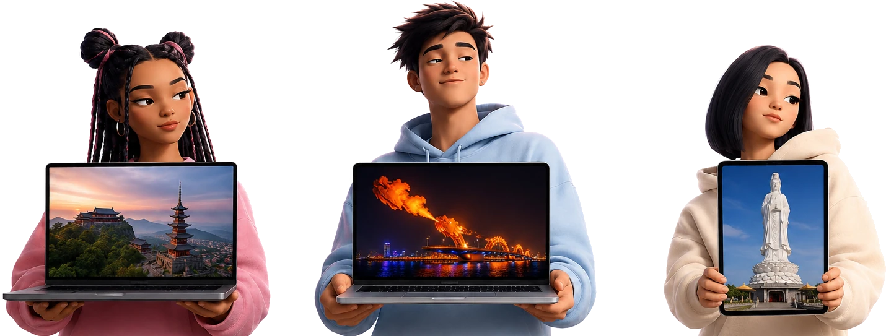
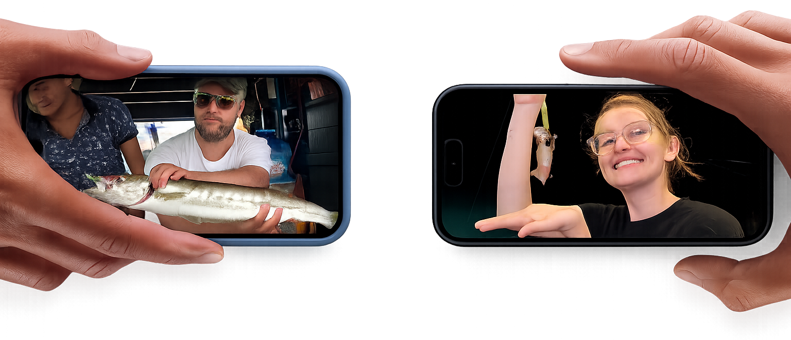
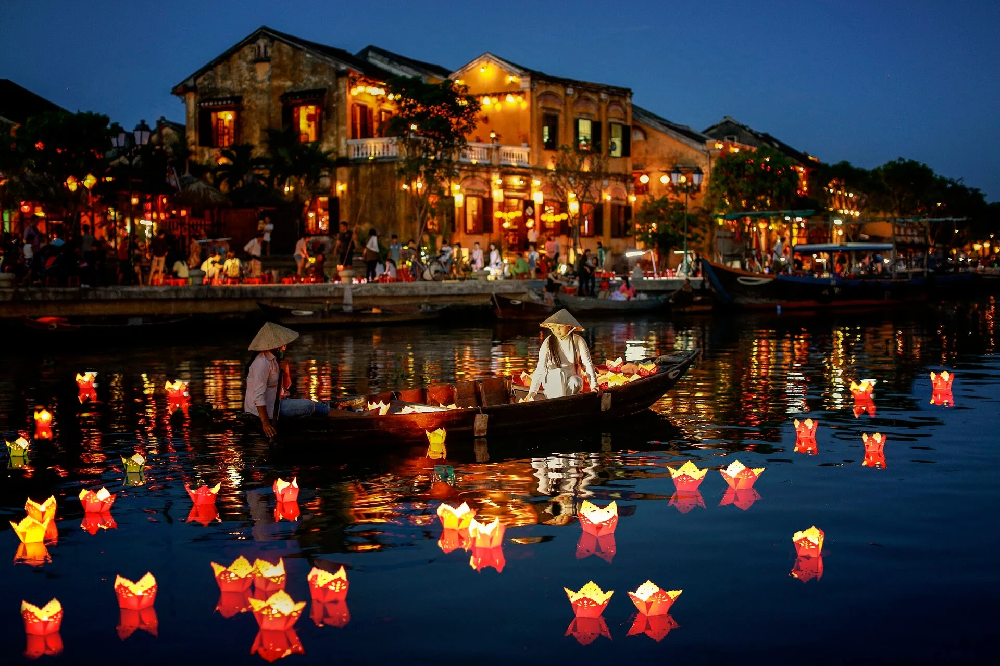

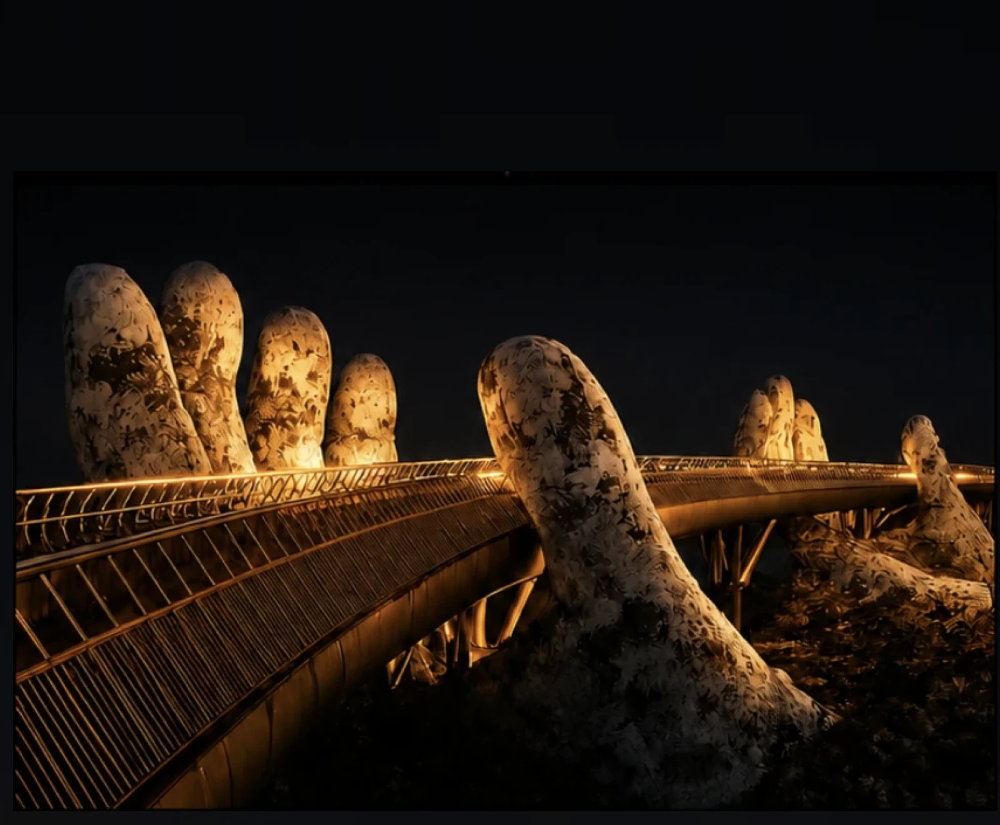
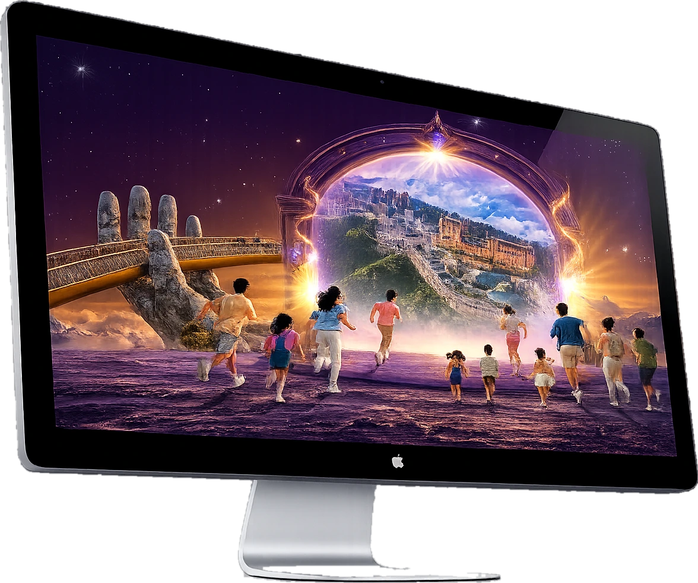
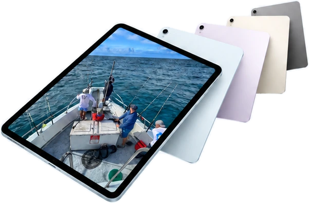
Бесконечные путешествия
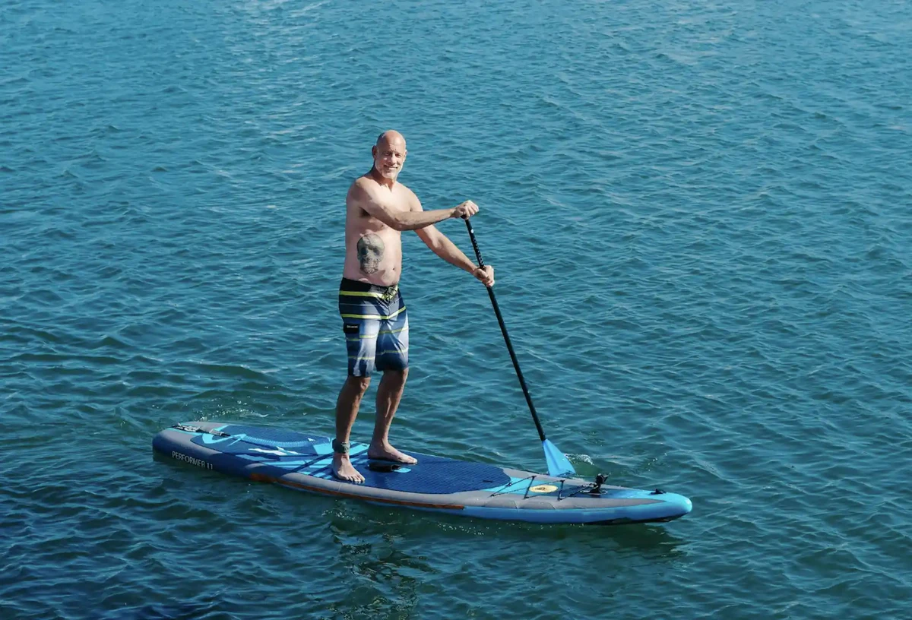
Морская прогулка · Закат на воде · Ужин на борту

Горячие источники — гора удачи · Онсэн · Аквапарк · 72$

VinWonders Хойан · Сафари · Парк аттракционов · 60$

Вечерний Ba Na Hills · Магия Маленькой Европы · Золотой мост
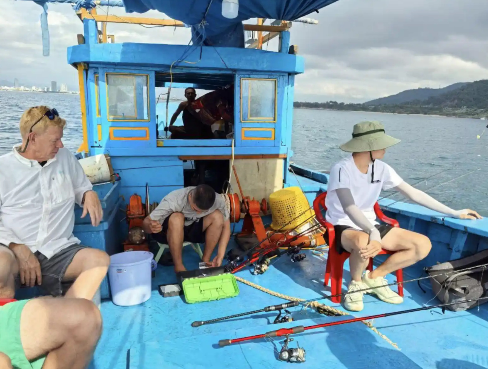
Рыбалка в открытом море · Тралловый бот · Удочки · Свежий улов
Древний Хойан · Наследие ЮНЕСКО · Город тысяч фонариков · 65$
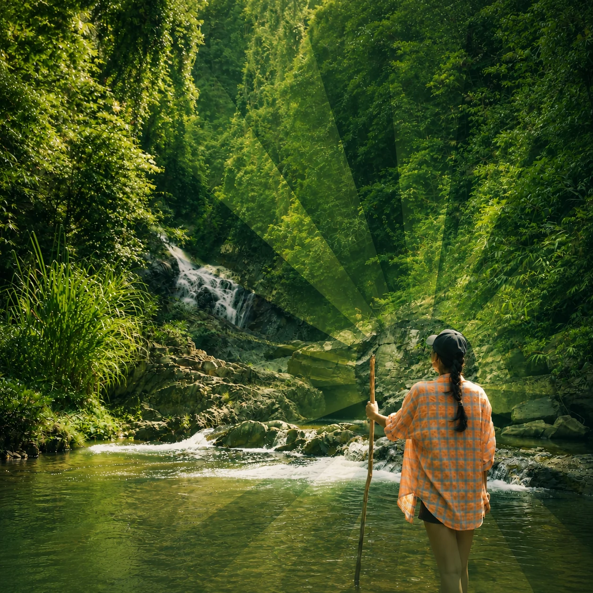
Небесные врата Донг Зянг · Пещеры · Водопады · 70$
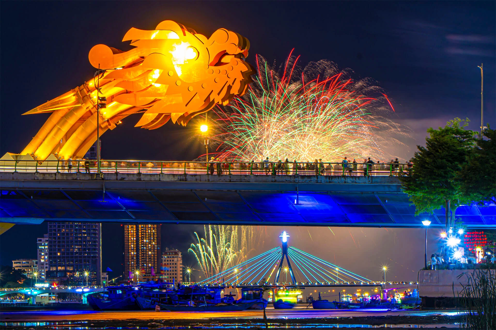
Дананг за один день · Шоу Дракона · Мраморные горы · 64$

Острова Чам · Снорклинг · Обед включён · 70$
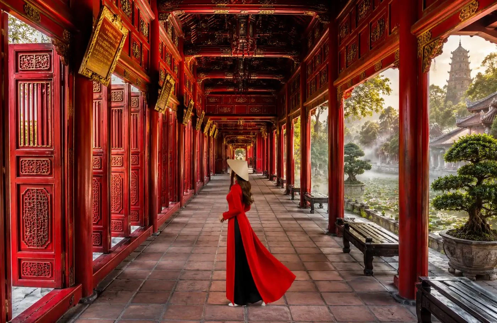
Императорский Хюэ · Запретный город · Величие династий · 85$
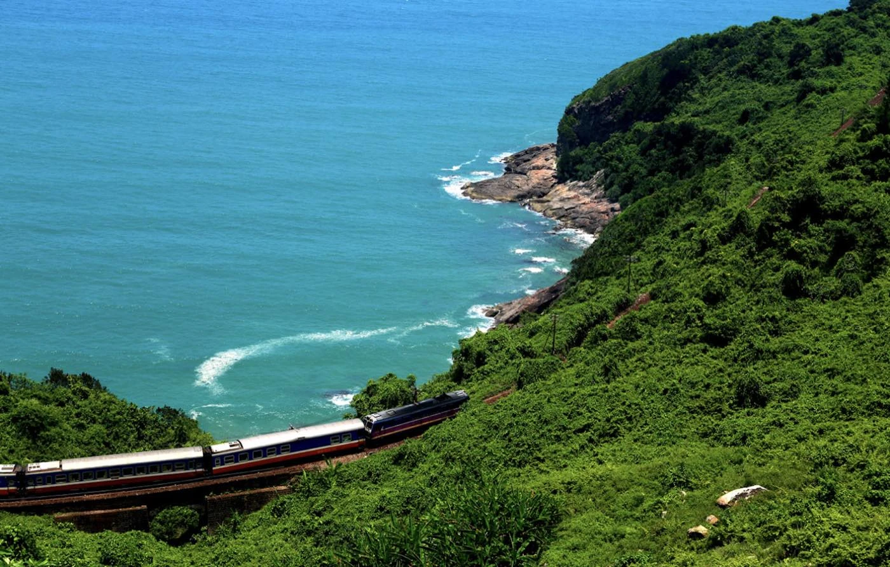
Легендарный перевал Хайван · Горный серпантин · Купание в водопадах · 65$